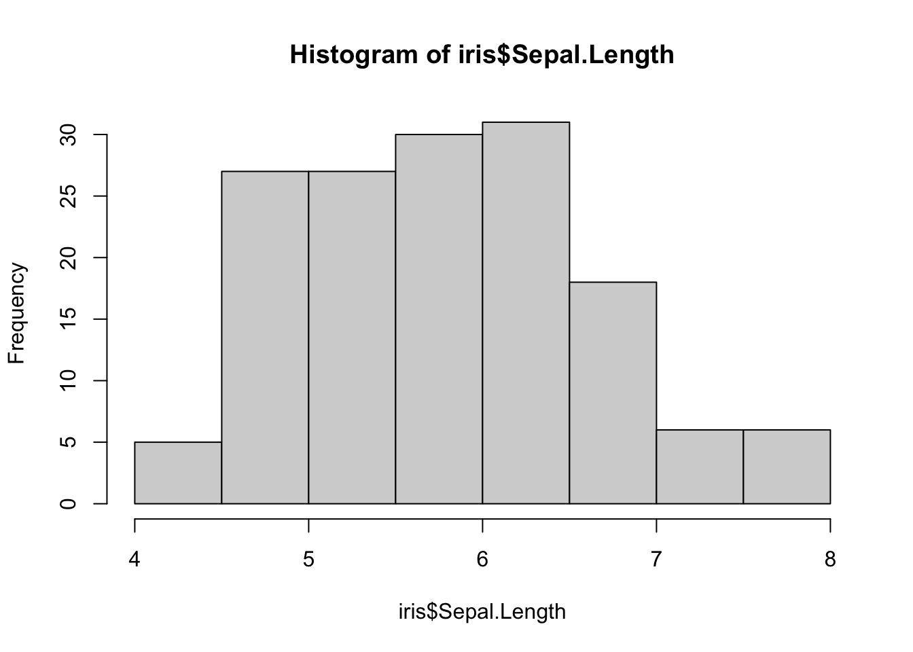
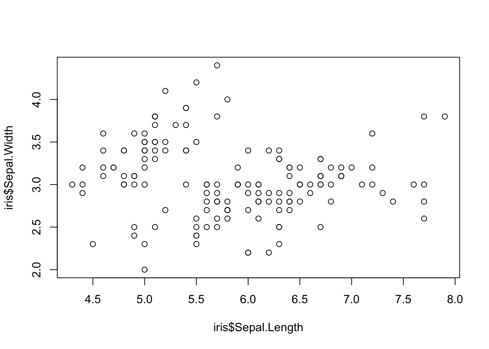
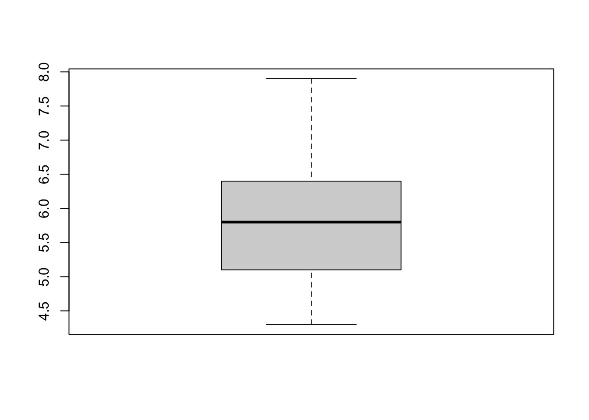
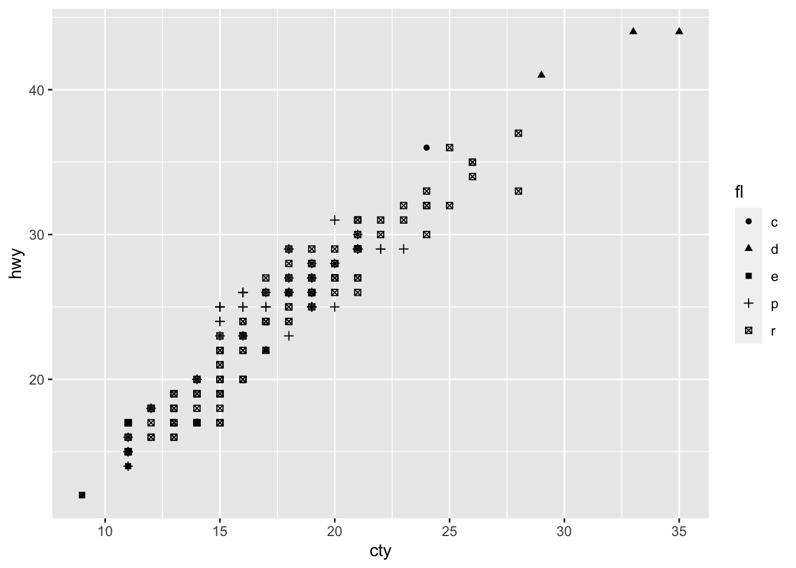
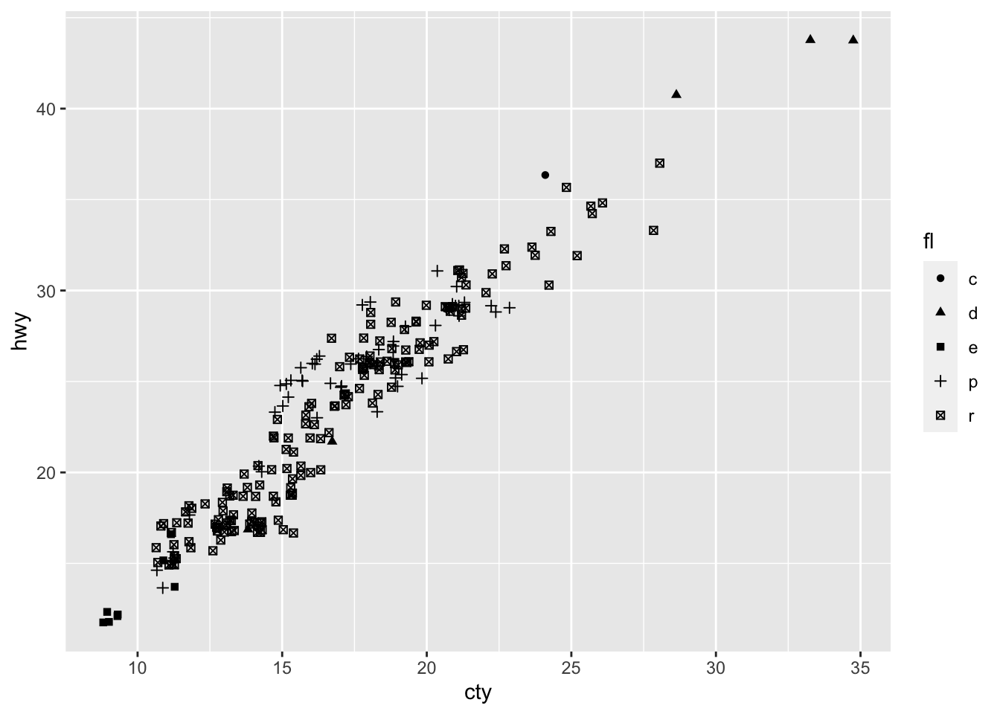
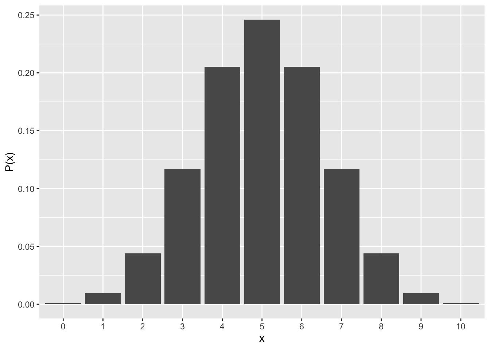
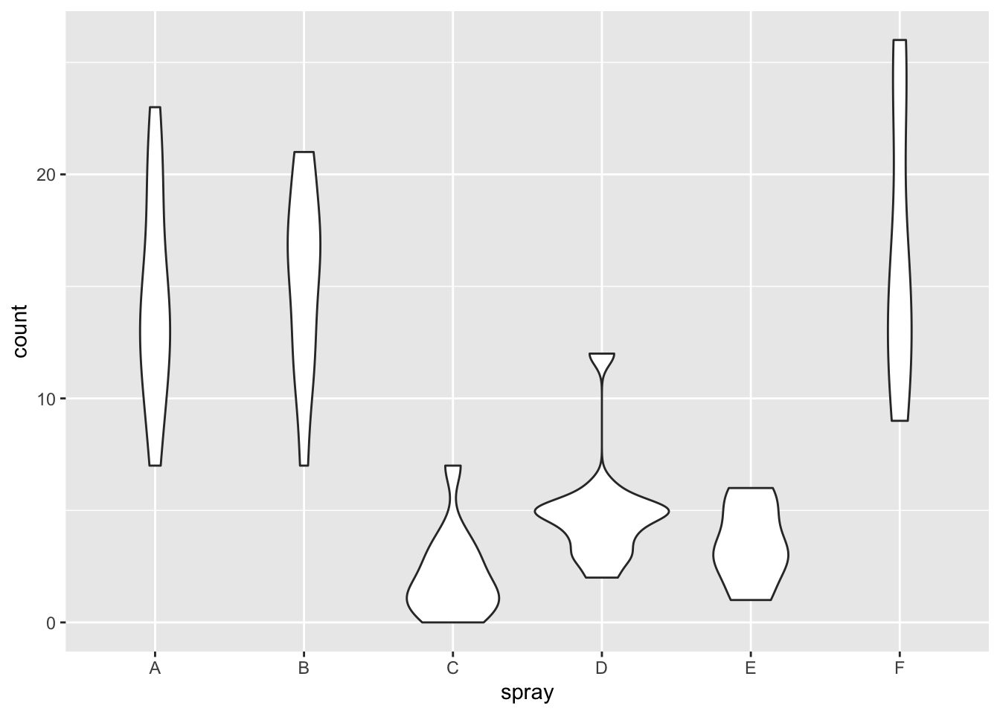
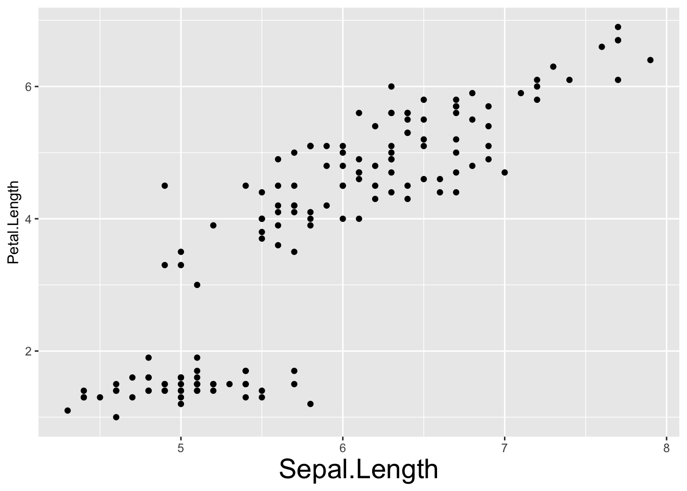
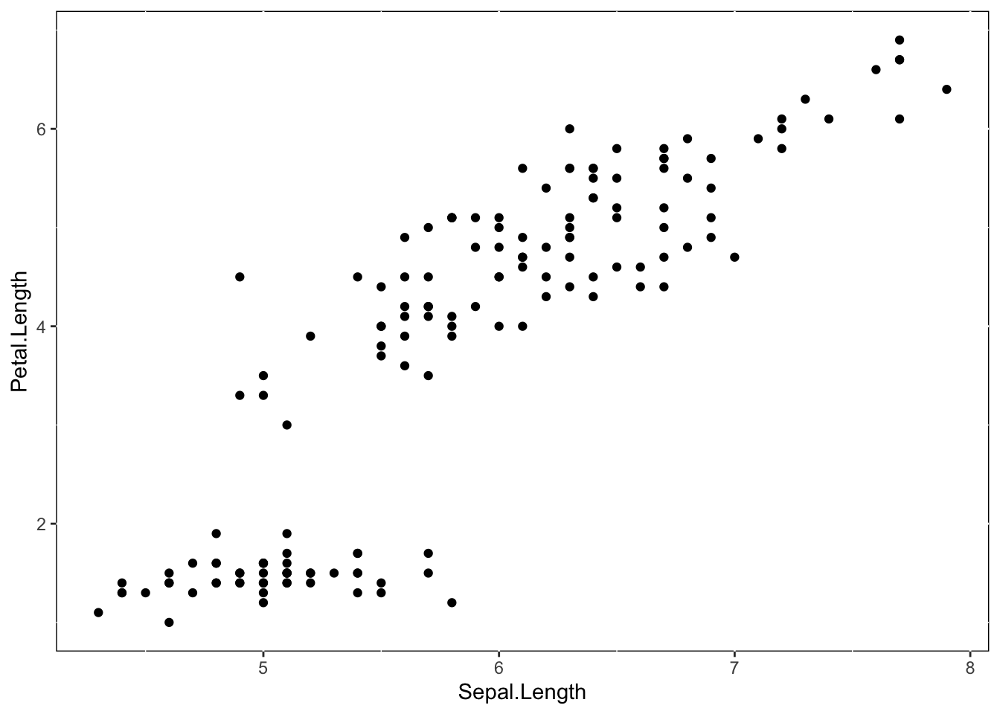
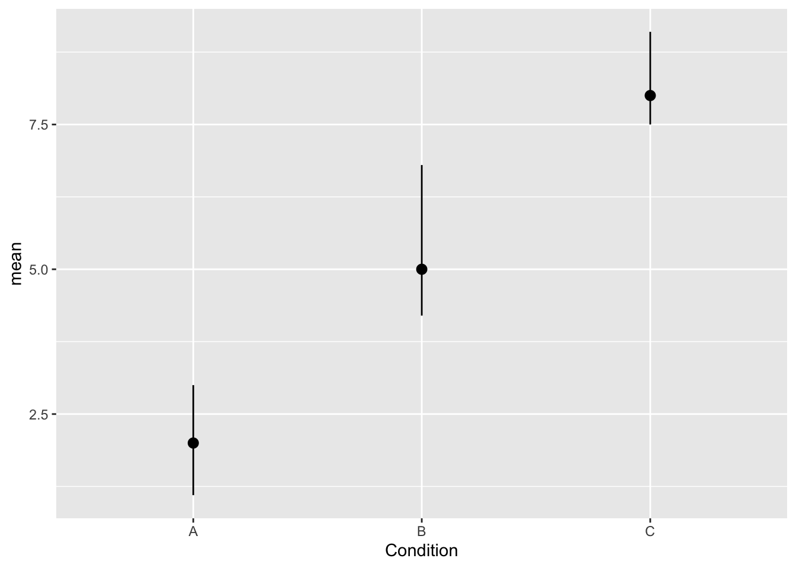

Chapter 5 グラフ
データをグラフで表現する方法について学ぶ。
データの傾向をグラフによって表現することを可視化という。この章では，ggplot2パッケージを使って，データを可視化する方法について学んでいく。
ggplot2もtidyverseパッケージに含まれている。まずは，tidyverseパッケージをロードしよう。
5.1 なぜ可視化が重要か？
データを解析する際には，単に平均値など数値を確認するだけではなく，必ずデータの分布を確認する習慣を身に着けよう。
例えばデータに極端に高い値があったりする場合は，代表値として平均値を使うのは適切でないことがわかったりする。データが正規分布と違うかたちをしているか，データの中に外れ値はないかなど，分布の形状をデータ解析の前に確認しておくことは重要である。
5.2 Rのグラフィック
Rの利点は，データのグラフィックに優れていることである。
Rには標準でグラフを作成するための関数がいくつか用意されている。
hist()はヒストグラム，plot()は散布図，boxplot()は箱ひげ図を作成するための関数である。



手っ取り早くデータの分布や相関を確認したい場合は，これらの関数を使えば十分である。
しかし，標準で入っている関数は出力されるグラフがきれいではなかったり（論文やレポートなどで報告するには不十分），自分の好みに合わせてグラフの体裁を変えることもできるがオプションの指定方法が複雑といったデメリットもある。作成できるグラフの種類も限られている。
これに対し，ggplot2はグラフを作る機能に特化したパッケージである。
ggplot2の使い方も初学者には難しいが，以降で基本的な使い方について絞って確認していこう。
5.3 ggplot2の基本
早速，ggplot2を使ってグラフを作ってみよう。以下のプログラムを実行してみよう。
p = ggplot() +
geom_point(data = iris, aes(x=Sepal.Length, y=Petal.Length)) +
labs(x = "Length of sepal", y = "Length of petal")
p
プログラムの解説：
ggplot()：初期設定。「ggplot2を使ってグラフを書きます」という意味。必ず書く。カッコの中には何も入れなくて良い。
geom_xxxx()：グラフの種類の指定。必ず書く。xxxxには，グラフの種類を入力する。この例では，散布図を書くのでgeom_pointを指定した。更に，カッコの中に必要な設定を記す。
data =でグラフを描画するデータを指定する。
更に，aes()のカッコの中に描画に必要な要素を指定する。x=とy=でそれぞれ， x軸とy軸に指定したい変数を指定する。点の大きさ，色，線の種類など，グラフの種類によって指定できる要素がある。
オプション：上での例では，labs()でx軸やy軸のラベルを指定している。他にも，軸の値の範囲，軸のラベル，グラフの色の設定などをオプションで指定することができる。オプションを加えなくてもグラフは出力される。
とりあえず，これらだけ知っておけばggplot2でグラフが作れる。
5.3.1 散布図
geom_pointで作成できる。

この例では，shape =でグループを指定して，グループごとに点のかたちを変えた散布図を作成した。
点が重なって見えにくい場合は，geom_jitterを使うとランダムのズレを生成して表示してくれる。

5.3.2 ヒストグラム
geom_histogramで作成する。

p = ggplot() +
geom_histogram(data = iris, aes(x=Sepal.Length, fill = Species)) #種類ごとに色の塗りつぶしを変えたい場合は，fillに指定する。
p
5.3.3 箱ひげ図
geom_boxplotで作成する。
最小値，第一分位点，中央値，第三分位点，最大値を示す（外れ値は点で示される）。
5.3.4 バイオリンプロット
データの分布を表現したグラフ。
geom_violinで作成する。


5.3.5 折れ線グラフ
geom_line()を使う。geom_line()だけだと線のみだが，geom_point()で作ったグラフを重ねることで，点もつけることができる。このように，複数のグラフを重ねて描画することもできる。
#サンプルデータをつくる: 10日間の気温の変化
temperature = data.frame(
Days = 1:10,
Celsius = c(17.2, 17.5, 18.1, 18.8, 19.0, 19.2, 19.7, 20.2, 20.5, 20.1)
)
temperature## Days Celsius
## 1 1 17.2
## 2 2 17.5
## 3 3 18.1
## 4 4 18.8
## 5 5 19.0
## 6 6 19.2
## 7 7 19.7
## 8 8 20.2
## 9 9 20.5
## 10 10 20.1p = ggplot() +
geom_line(data = temperature, aes(x=Days, y=Celsius)) +
geom_point(data = temperature, aes(x=Days, y=Celsius))
p
5.3.6 エラーバーつきのグラフ
geom_errorbar()でエラーバーをつけることができる。
あるいは，geom_pointrange()でも作れる。
#サンプルデータをつくる
sample_dat = data.frame(Condition=c("A", "B" ,"C"),
mean=c(2, 5, 8),
lower=c(1.1, 4.2, 7.5),
upper=c(3.0, 6.8, 9.1))
#meanが平均，lowerとupperにそれぞれ下限値と上限値。
p = ggplot() +
geom_point(data = sample_dat, aes(x = Condition, y = mean)) +
geom_errorbar(data = sample_dat, aes(x = Condition, ymax = upper, ymin = lower), width = 0.1)
#まず，geom_pointで平均を点で示したグラフを作成する。そのグラフに，ymaxとyminにそれぞれ上限値と下限値を指定したエラーバーのグラフを重ねる（widthでエラーバーの横の長さを指定できる）。
p5.4 オプション
5.4.1 ファセット（Facet）
グループごとにグラフを分けたい場合は，ファセット（facet）を利用すると良い。facet_wrap()を使う。
p = ggplot() +
geom_point(data = iris, aes(x=Sepal.Length, y=Petal.Length)) + facet_wrap(vars(Species))
p
5.4.2 ラベル（labs）
x軸やy軸のラベルを変えたいときは，labsを使うと良い。
5.4.3 テーマ（Theme）
theme()で，フォントの大きさや色などグラフのテーマも細かく変えることができる。具体的にどの部分を変えられるかは，theme()のヘルプで確認してほしい。
p = ggplot() +
geom_point(data = iris, aes(x=Sepal.Length, y=Petal.Length))
p + theme(axis.title.x = element_text(size = 20)) #x軸のフォントサイズを変える

手っ取り早く一括でテーマを変えたい場合は，予め用意されている既存のテーマを選ぶと良い。theme_bw(), theme_classic()などが用意されている。


5.5 図の保存
ggsave()を使う。plotに保存した図を，filenameにファイル名を指定すると，ワーキングディレクトリに作成した図が保存される。
p = ggplot() +
geom_point(data = iris, aes(x=Sepal.Length, y=Petal.Length)) +
labs(x = "Sepal Length", y = "Petal Length") +
theme_bw()
ggsave(plot = p, filename = "plot.png") #ファイル名を指定する。拡張子も忘れずにつける。
ggsave(plot = p, filename = "plot_2.png", dpi = 300) #解像度（dpi）を指定可能。
ggsave(plot = p, filename = "plot_3.png", width = 8, height = 5) #幅(width)や高さ(height)を指定可能（単位はインチ）。5.6 その他の機能
ggplot2の機能はまだまだある。このテキストで説明しきれていないことについては，関数のヘルプやRStudioのサイトにあるggplot2のCheat sheetを見てみよう（日本語訳もある）。
https://rstudio.com/resources/cheatsheets/
確認問題
Rに標準で入っているmtcarsデータを使って，グラフを作成しよう。
問１
Rで標準で入っているhist()を使って，変数mpgのヒストグラムを作ろう。
問２
Rで標準で入っているplot()を使って，変数mpgと変数wtの散布図を作ろう。
問３
ggplot()で，変数mpgと変数wtの散布図を作ろう。グラフには以下の点を反映させること。
- x軸をmpg，y軸をwtとする。
- x軸のラベルは「Miles/gallon」，y軸のラベルは「Weight」とする。
- テーマはtheme_classic()にする。